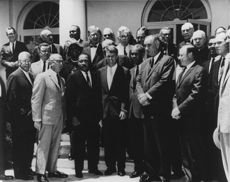
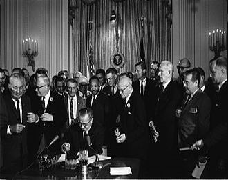

Martin Luther King Jr.
The Man Who Brought Salvation To The Blacks And The Poverty

King and other civil rights leaders, June 22, 1963

President Johnson signing the Civil Rights Act of 1964.
Summary Of His Life :
- 1929 : Born in Atlanta, Georgia.
- 1942 : Became the youngest assistant manager of a newspaper delivery station for the Atlanta Journal. Skipped ninth grade and was enrolled in Booker T. Washington High School.
- 1944 : Entered Morehouse College at age 15.
- 1947 : Decided to enter the ministry.
- 1948 : Graduated with Bachelor of Arts (BA) in Sociology. Studied under the mentorship of Baptist minister, Benjamin Mays throughout his college years.
- 1951 : Started doctoral studies in systematic theology at Boston University. Worked as an assistant minister at Boston's historic Twelfth Baptist Church with Reverend William Hunter Hester while still studying.
- 1953 : Married to Coretta Scott.
- 1954 : Was called as pastor of the Dexter Avenue Baptist Church in Montgomery, Alabama.
- 1955 : Obtained his PhD degree. Led the Montogomery bus boycott movement in which the Court decided to end the racial segregation on Montogomery public bus.
- 1957 : Founded the Southern Christian Leadership Conference (SCLC) with other civil rights leader. The group enabled moral authority and organizing power of black churches to conduct nonviolent protests for civil rights reformation.
- 1961 : Mobilized a movement for nonviolent attacks on every racial segregation in the city, known as Albany Movement.
- 1963 : Organized the Birmingham Campaign, a campaign which intentionally violate unjust laws to trigger mass arrest for demonstrators to open opportunities for negotiation.
- 1964 : Won the Nobel Peace Prize for fighting racial inequality without violence.
- 1967 : Delivered a speech titled, "Beyond Vietnam: A Time to Break Silence" to oppose the American-Vietnam War as funds were wasted on military instead of social welfare.
- 1968 : Organized Poor People's Campaign to speak on economic justice. The march involved nonviolent civil disobedience until the Congress devised an economic bill of rights for the poverty. In April 4, King was assasinated via gunshot at Lorraine Motel's balcony.
"I Have A Dream" ~ Martin Luther King Jr.
This is only a summary, if interested, you may read further about
Martin Luther King Jr.
online.